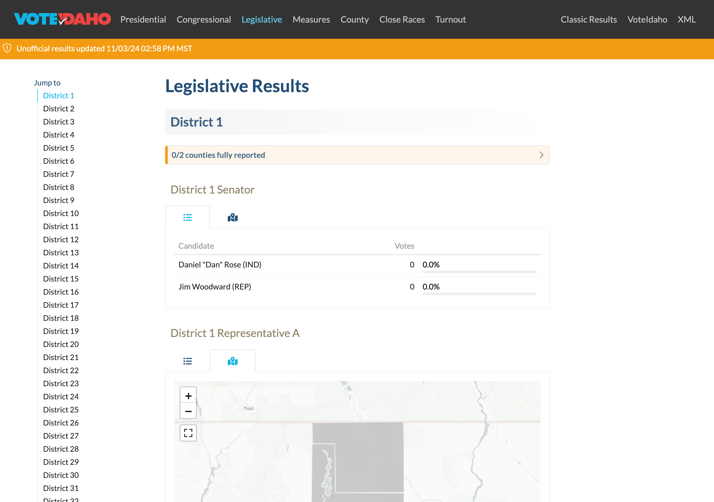
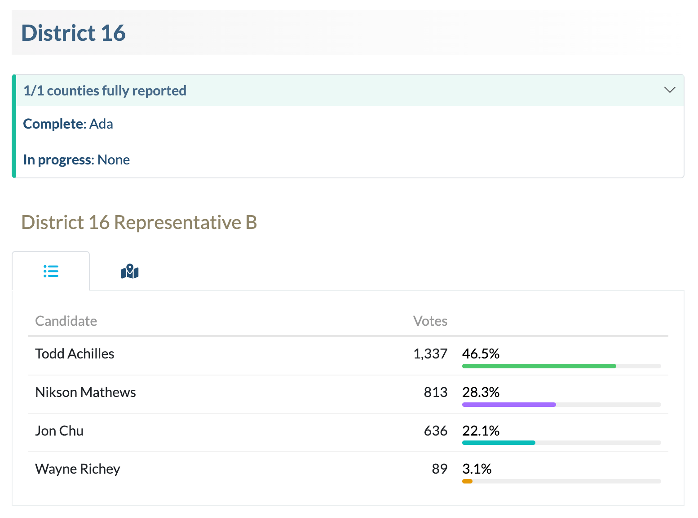
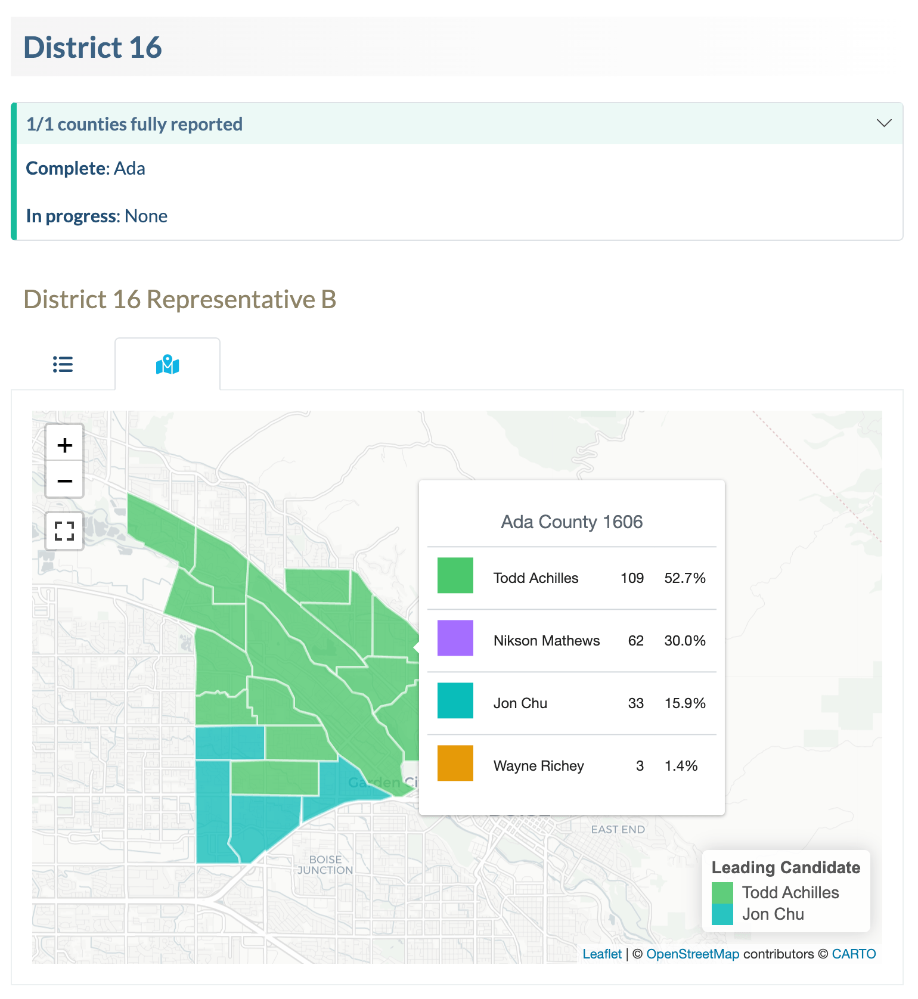
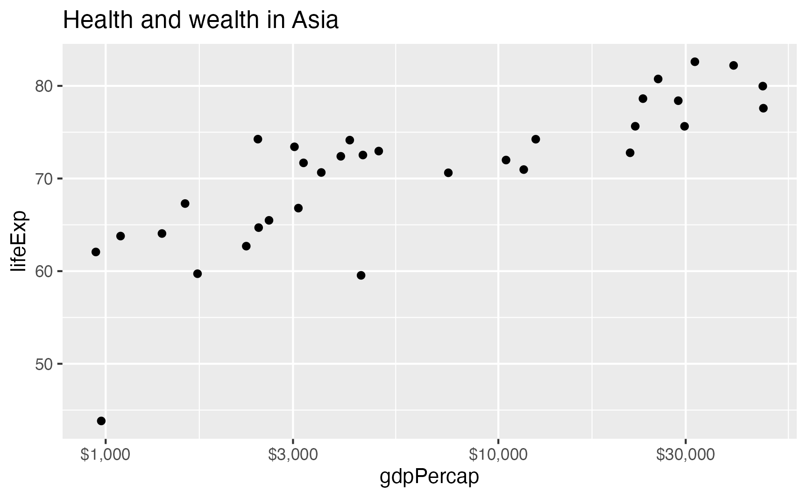
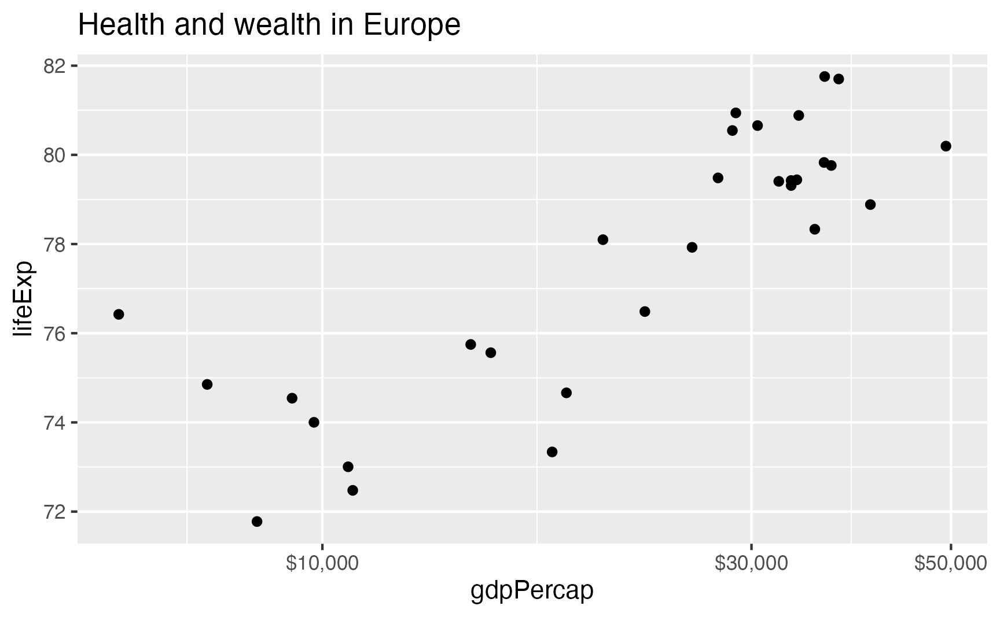
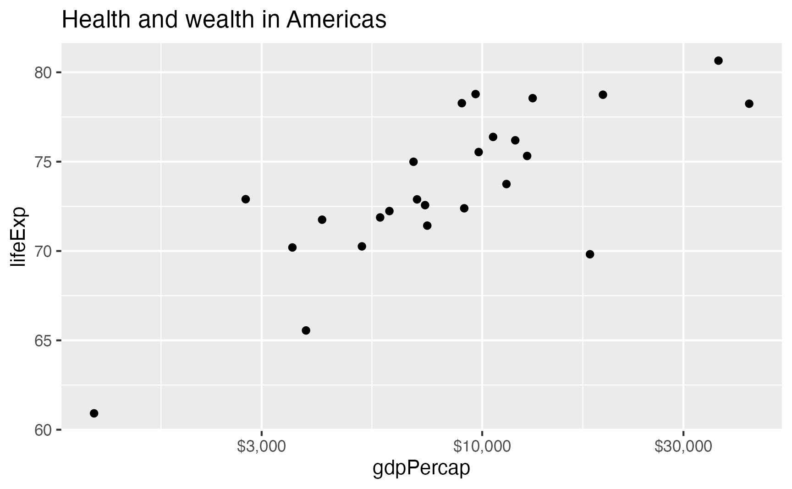
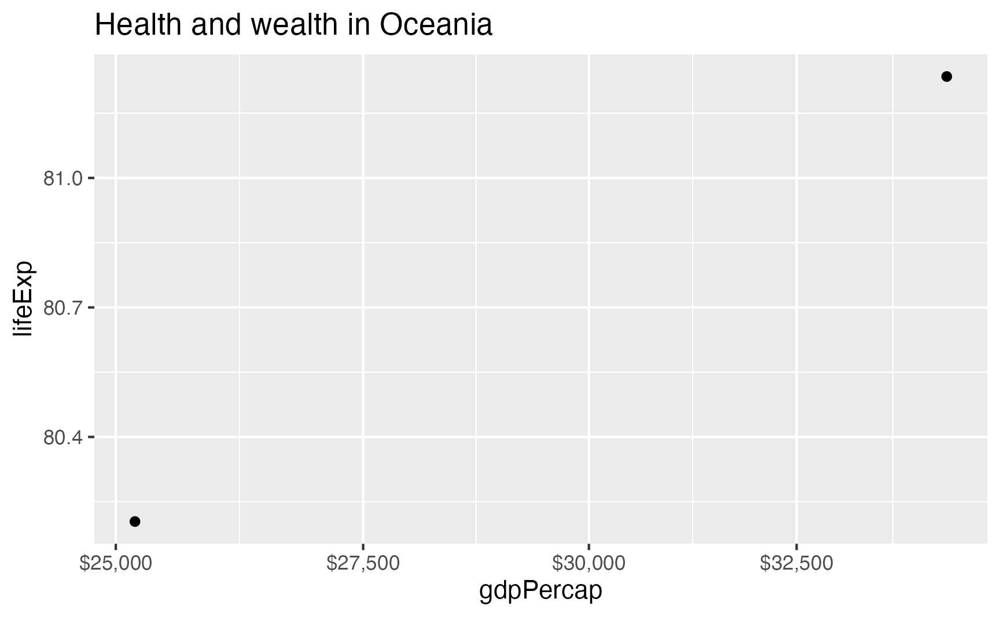
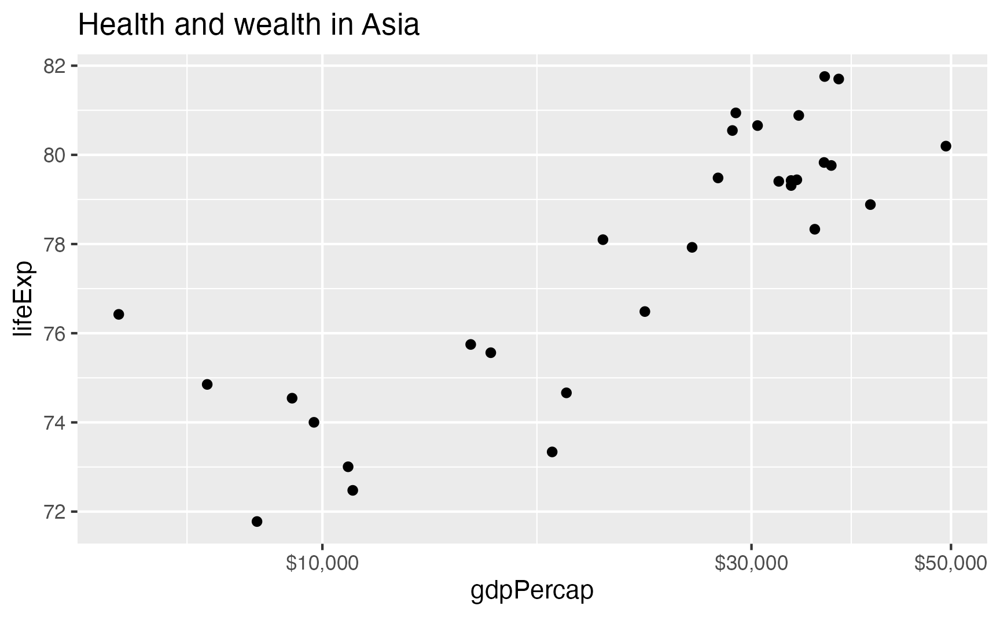
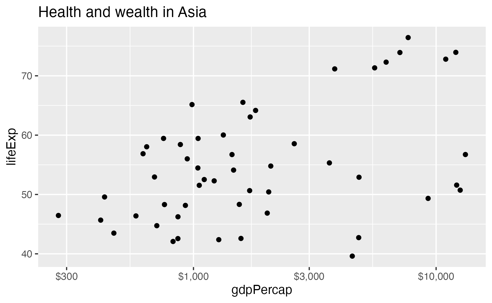
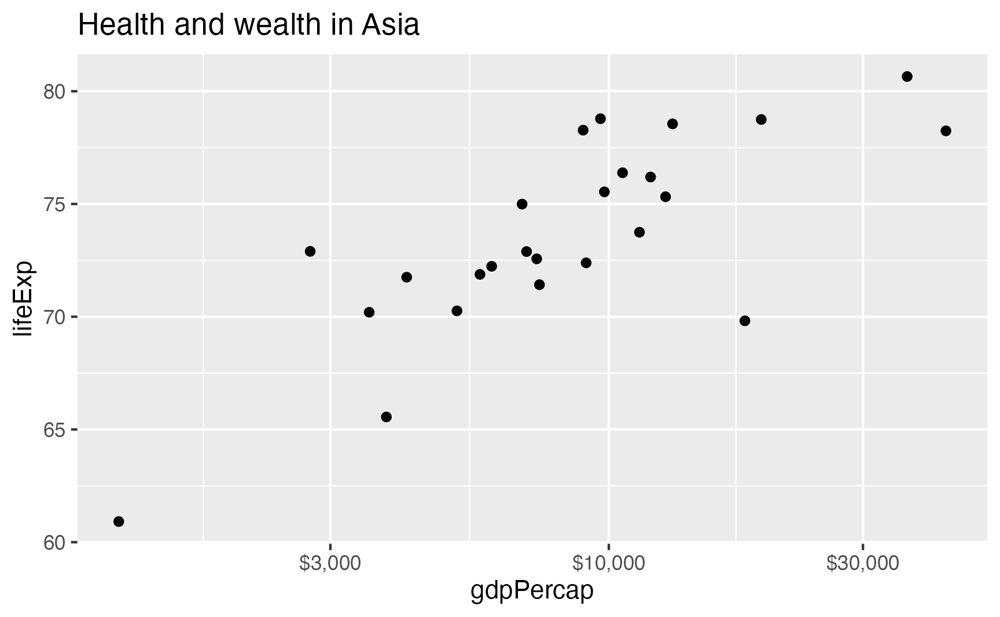

![]()
This year, I’ve helped build the Idaho Secretary of State’s office’s election results website for both the primary and general elections. Working with election data is a complex process, with each precinct reporting results to their parent counties, which all use different systems and software and candidate identifiers. Those county results then go into a central state-level database that state officials have access to for analysis and reporting.
In 2024, Idaho used a Quarto website to present the results for each statewide, congressional, and legislative contest (the URL is results.voteidaho.gov, though the Quarto website part probably won’t live there forever):

I may write something up someday about the process of building the website, depending on NDAs and security and copyright arrangements and whatnot. There are some neat technical details involved in the whole process, like complex static {targets} branching, remote {targets} storage, and replicating the structure of the real, live results database with a local DuckDB database for testing things without connecting to the live database. The short, sanitized version is that it uses two {targets} pipelines:
- An ETL pipeline connects to the central results database, retrieves the latest results for each contest, standardizes the idenfitiers and cleans up the results, generates summary tables and maps for each race, and pushes the cleaned results to a shared datastore.
- A website pipeline grabs the latest cleaned results from the shared datastore and builds a Quarto website.
The two pipelines run independently of each other every few minutes, and thanks to the magic of {targets}, if there are no updates (i.e. if there’s a lull in the reporting on election night), nothing needs to rebuild. It’s really neat.
There’s one Quarto/R Markdown trick that I used extensively when building the site: it’s possible to use R to automatically generate Quarto markdown before the entire document runs, allowing you to create parameterized templates for repeated elements.
Each race uses a tabset to show panels for (1) a table and (2) an interactive map of the results, and the reporting status for all the counties involved in the race is included in a callout block.


The markdown for each of these race results sections looks something like this:
## Parent district
::: {.callout-note title="X/Y counties fully reported" collapse="true"}
**Complete**: list of counties
**In progress**: list of counties
:::
### Race name
::: {.panel-tabset}
#### Table
```{r}
# R code for creating the table
```
#### Map
```{r}
# R code for creating the map
```
:::For pages where there’s only one race, like the presidential election and the state’s constitutional amendment election, it’s trivial enough to just copy/paste that general template and replace the corresponding R code. But for the state-level legislative page, there are dozens of races. Repeating and modifying all that markdown 100+ times would be miserable. So instead, we programmatically generate the markdown for each race before the site is rendered so that Quarto thinks it’s working with hand-typed markdown.
Generating big chunks of markdown like this is a really cool approach with all sorts of applications (generate sections of a website; generate panel tabsets; generate presentation slides; etc.), but it’s a little unwieldly at first. So in this post, I’ll (1) show why this is trickier than just using regular R chunks with results="asis", (2) present a detailed step-by-step explanation of how to pre-render generated computational chunks, (3) provide a shorter, simpler, less-annotated example, and (4) give a more complex, less-annotated example.
Why not just use results="asis"?
It’s easy to use R/Python chunks to generate HTML or LaTeX or Typst or markdown and have that output appear in the rendered document—this is essentially what table-making packages like {tinytable}, {gt}, and {kableExtra} all do. To illustrate this, let’s load {gapminder} data:
We can create a markdown list of all the continents in the dataset. Here I do it with paste0(), but I could also use a nicer wrapper like {pander}, which includes all sorts of functions for generating markdown.
This correctly makes a list, but it doesn’t get rendered like a list—it’s displayed as code chunk output:
continents <- gapminder_2007 |>
distinct(continent) |>
pull(continent)
cat(paste0("- ", continents, collapse = "\n"))- Asia
- Europe
- Africa
- Americas
- OceaniaWe can tell Quarto to treat the output of that chunk as raw markdown instead by setting the results="asis" chunk option:
```{r}
#| results: asis
cat(paste0("- ", continents, collapse = "\n"))
```- Asia
- Europe
- Africa
- Americas
- Oceania
That’s great and normal and I use this approach all the time for generating non-computational markdown.
Where this doesn’t work is when you have R chunks that need to be computed. To show this, let’s make a list showing π rounded to different digits using inline code chunks. We can manually type it like this:
- `r round(pi, 1)`
- `r round(pi, 2)`
- `r round(pi, 3)`
- `r round(pi, 4)`
- `r round(pi, 5)`…which renders like this:
- 3.1
- 3.14
- 3.142
- 3.1416
- 3.1416
But that’s a lot of typing. So let’s generate it automatically. I’ll do this in a data frame, just because I like working that way, but you could also use standalone vectors (or even—gasp—a loop!):
pi_stuff <- tibble(digits = 1:5) |>
mutate(list_element = paste0("- `r round(pi, ", digits, ")`"))
# Everything is in the list_element column:
pi_stuff
## # A tibble: 5 × 2
## digits list_element
## <int> <chr>
## 1 1 - `r round(pi, 1)`
## 2 2 - `r round(pi, 2)`
## 3 3 - `r round(pi, 3)`
## 4 4 - `r round(pi, 4)`
## 5 5 - `r round(pi, 5)`We can put that column in a results="asis" chunk…
```{r}
#| results: asis
cat(paste0(pi_stuff$list_element, collapse = "\n"))
```r round(pi, 1)r round(pi, 2)r round(pi, 3)r round(pi, 4)r round(pi, 5)
…and it renders correctly as markdown, but it doesn’t run the inline chunks :(
This is because of an issue with ordering: Quarto renders the chunk with cat(paste0(...)) and then moves on to the next chunk in the document. It won’t render the R chunks that the pi_stuff$list_element object contains because they’re all nested inside the parent chunk, and Quarto’s rendering process has moved on by the time the newly generated R chunks appear.
The trick is to pre-render the chunks before they officially show up in the document.1 We can feed the collapsed pi_stuff$list_element object to knitr::knit() in an inline chunk, which makes Quarto render all the R chunks inside the chunk first, then place the output in the document to be rendered in the correct order like normal chunks:
1 I haven’t found this formally documented anywhere—I stumbled across this approach in this gist from 2015.
Here's some regular markdown text. Let's show a list of
differently-rounded values of $\pi$ for fun:
`r knitr::knit(text = paste0(pi_stuff$list_element, collapse = "\n"))`
Isn't that neat?That markdown will render to this:
Building a panel tabset with an inline chunk
Technically there was no need to use knitr::knit() in an inline chunk for that previous example. It would be easier to generate the text output within the pi_stuff data frame instead of in a bunch of inline chunks, and then show the results like normal with results="asis"
```{r}
#| results: asis
pi_stuff_easier <- tibble(digits = 1:5) |>
mutate(list_element = paste0("- ", round(pi, digits)))
cat(paste0(pi_stuff_easier$list_element, collapse = "\n"))
```- 3.1
- 3.14
- 3.142
- 3.1416
- 3.14159
However, using knitr::knit(text = BLAH) in an inline chunk like this is a powerful trick that lets you do all sorts of more complex document generation automation. Let’s make a more complicated example with real data instead of a bunch of π rounding.
For this example, let’s make a panel tabset with a plot for each continent in the gapminder_2007 dataset we made earlier.
First, we’ll make a list of plots. This can be done any number of ways—I like using group_by() |> nest() and {purrr} functions like map(), but any way will work as long as you have a list of ggplot objects in the end.
continents_plots <- gapminder_2007 |>
group_by(continent) |>
nest() |>
ungroup() |>
# We could use map2(), but I like using pmap() just in case I need to
# expand it beyond 2 things
mutate(plot = pmap(
lst(data, continent),
\(data, continent) {
plot_title <- paste0("Health and wealth in ", continent)
ggplot(data, aes(x = gdpPercap, y = lifeExp)) +
geom_point() +
scale_x_log10(labels = scales::label_dollar(accuracy = 1)) +
labs(title = plot_title)
}))
continents_plots
## # A tibble: 5 × 3
## continent data plot
## <fct> <list> <list>
## 1 Asia <tibble [33 × 5]> <gg>
## 2 Europe <tibble [30 × 5]> <gg>
## 3 Africa <tibble [52 × 5]> <gg>
## 4 Americas <tibble [25 × 5]> <gg>
## 5 Oceania <tibble [2 × 5]> <gg>The plots are all in the plot column in continents_plots, which is a list of ggplot objects. Here’s one of them:
continents_plots$plot[[3]]To make a tabset with a panel for each continent, we need to write markdown like this:
::: {.panel-tabset}
### Continent 1
```{r}
#| label: panel-continent-a
#| echo: false
continents_plots$plot[[1]]
```
### Continent 2
```{r}
#| label: panel-continent-b
#| echo: false
continents_plots$plot[[2]]
```
### (…and so on…)
:::We could just copy/paste those continent sections over and over, but that’s tedious and not very dynamic. Instead, we can create a little markdown template for each panel and generate all these chunks. To do that, we’ll use {glue}, which is a lot nicer for building strings than using paste0(), since it uses Python-style string interpolation. glue::glue() replaces any text inside {}s with the corresponding variable value:
# Some values
animals <- "cats"
number <- 12
location <- "house"
# Ugly paste() way
paste0("There are ", number, " blue ", animals, " in the ", location)
## [1] "There are 12 blue cats in the house"
# Nice glue() way
glue("There are {number} blue {animals} in the {location}")
## There are 12 blue cats in the houseIf you need to use literal curly braces in the text, you can either double them or change the delimiters:
pkg_name <- "ggplot2"
# The curly braces disappear
glue("The {pkg_name} package is delightful")
## The ggplot2 package is delightful
# Double them to keep them
glue("The {{{pkg_name}}} package is delightful")
## The {ggplot2} package is delightful
# Or change the delimiter
glue("The {<<pkg_name>>} package is delightful", .open = "<<", .close = ">>")
## The {ggplot2} package is delightfulBeing able to change the delimiter is useful since we’ll need to generate chunks that start with ```{r}.
We can use glue() in a function that takes a continent name and a row number and generates a markdown tabset panel:
build_panel <- function(panel_title, plot_index) {
chunk_label <- glue("panel-continent-{title}", title = janitor::make_clean_names(panel_title))
output <- glue("
### <<panel_title>>
```{r}
#| label: <<chunk_label>>
#| echo: false
continents_plots$plot[[<<plot_index>>]]
```", .open = "<<", .close = ">>")
output
}First let’s make sure it works by itself:
build_panel("Africa", 3)### Africa
```{r}
#| label: panel-continent-africa
#| echo: false
continents_plots$plot[[3]]
```Yep!
Now we can iterate through the data frame of all the continents (continents_plots) and make a column that contains the markdown panel text.
continents_plots_with_text <- continents_plots |>
mutate(row = row_number()) |>
mutate(markdown = pmap_chr(
lst(continent, row),
\(continent, row) build_panel(panel_title = continent, plot_index = row)
))continents_plots_with_text# A tibble: 5 × 5
continent data plot row markdown
<fct> <list> <list> <int> <chr>
1 Asia <tibble [33 × 5]> <gg> 1 "### Asia\n\n```{r}\n#| label: panel-continent-asia\n#| echo: false\ncontinents_plots$plot[[1]]\n```"
2 Europe <tibble [30 × 5]> <gg> 2 "### Europe\n\n```{r}\n#| label: panel-continent-europe\n#| echo: false\ncontinents_plots$plot[[2]]\n```"
3 Africa <tibble [52 × 5]> <gg> 3 "### Africa\n\n```{r}\n#| label: panel-continent-africa\n#| echo: false\ncontinents_plots$plot[[3]]\n```"
4 Americas <tibble [25 × 5]> <gg> 4 "### Americas\n\n```{r}\n#| label: panel-continent-americas\n#| echo: false\ncontinents_plots$plot[[4]]\n`…
5 Oceania <tibble [2 × 5]> <gg> 5 "### Oceania\n\n```{r}\n#| label: panel-continent-oceania\n#| echo: false\ncontinents_plots$plot[[5]]\n```"Check out that new markdown column—it has a third level heading with the continent name, followed by an R chunk that will display the corresponding plot object from continents_plots. Here’s what one panel looks like:
cat(continents_plots_with_text$markdown[[1]])### Asia
```{r}
#| label: panel-continent-asia
#| echo: false
continents_plots$plot[[1]]
```Finally, we need to concatenate that column into one big string and include it as an inline chunk inside Quarto’s syntax for tabsets:
Health and wealth are related in each continent.
::: {.panel-tabset}
`r knitr::knit(text = paste0(continents_plots_with_text$markdown, collapse = "\n\n"))`
:::
Automatic tabset panels!Here’s what it looks like when rendered:
Health and wealth are related in each continent.





Automatic tabset panels!
Perfect! We successfully generated a bunch of R chunks, pre-rendered them with Quarto, and then rendered the rest of the document.
Condensed example showing the evolution of a ggplot plot
Now that we’ve walked through the general process in detail, we’ll look at a less didactic example. Suppose you want to show the step-by-step process of creating a ggplot plot in a tabset panel or in a Revealjs Quarto slideshow. You could manually copy/paste a bunch of markdown over and over (ew), or you could generate chunks and make Quarto make the panels or slides for you (yay).
First we’ll make a list of plots. There’s actually a neat new package—{ggreveal}—that can create a list of intermediate plots automatically, but I’ll just do it manually here (though this process will work the same with {ggreveal}).
p1 <- ggplot(gapminder_2007, aes(x = gdpPercap, y = lifeExp, color = continent)) +
geom_point()
p1_text <- glue("
ggplot(gapminder_2007, aes(x = gdpPercap, y = lifeExp, color = continent)) +
geom_point()")
p2 <- p1 +
scale_x_log10(labels = scales::dollar_format(accuracy = 1))
p2_text <- glue("
{p1_text} +
scale_x_log10(labels = scales::dollar_format(accuracy = 1))
")
p3 <- p2 +
scale_color_viridis_d(option = "plasma", end = 0.9)
p3_text <- glue('
{p2_text} +
scale_color_viridis_d(option = "plasma", end = 0.9)
')
p4 <- p3 +
theme_minimal()
p4_text <- glue('
{p3_text} +
theme_minimal()
')
p5 <- p4 +
labs(x = "GDP per capita", y = "Life expectancy", color = "Continent")
p5_text <- glue('
{p4_text} +
labs(x = "GDP per capita", y = "Life expectancy", color = "Continent")
')
plot_list <- list(p1, p2, p3, p4, p5)
plot_text <- list(p1_text, p2_text, p3_text, p4_text, p5_text)
plot_list <- tribble(
~plot, ~code_text, ~description,
p1, p1_text, "Start with the initial plot…",
p2, p2_text, "…use a logarithmic x-axis…",
p3, p3_text, "…change the color palette…",
p4, p4_text, "…change the theme…",
p5, p5_text, "…and change the default labels"
)We want the overall tabset to look something like this:
::: {.panel-tabset}
### Step 1
Short description
```{r}
plot_list[[1]]
```
```r
# Code here
```
### Step 2
Short description
```{r}
plot_list[[2]]
```
```r
# Code here
```
### …and so on
:::…so next we’ll generate markdown for each panel:
Finally we’ll wrap Quarto’s special markdown syntax for tabsets around these panels and then include the combined text as an inline chunk in the document:
Let's slowly build up the plot:
::: {.panel-tabset}
`r knitr::knit(text = paste0(panels, collapse = "\n\n"))`
:::Condensed example of continent-level mini reports
Finally, let’s look at one more example that’s similar to what I used for the Idaho election results website, making a sort of miniature report for each continent. This time, instead of creating a tabset panel for each continent, we’ll make a whole markdown section for each continent, with a tabset panel included in each.
Each continent section will look something like this:
### Continent name
::: {.callout-note icon="false" title="X countries" collapse="true"}
Comma-separated list of countries
:::
::: {.panel-tabset}
#### Details
```{r}
#| label: table-summary-continent
#| echo: false
# A table showing average GDP per capita and average life expectancy
```
#### Plot
```{r}
#| label: plot-summary-continent
#| echo: false
# A plot showing the relationship between GDP per capita and life expectancy
```
:::As before, we’ll translate this template into a glue() string, feed some data into it, and generate a bunch of R chunks.
This template is getting gnarly with so many moving parts and so many common {glue} delimiters like {}s and []s and <>s. An alternative approach is to put the template in a separate child Quarto document and then pre-render it with knitr::knit_child(), which behaves just like the inline knitr::knit(file = BLAH) approach we’ve been using. Quarto has an official example of how to do it here: example and code.
First, we’ll make a data frame with all the different pieces we want to include, using the same group_by(continent) |> nest() approach as before:
continent_report_items <- gapminder_2007 |>
group_by(continent) |>
nest() |>
ungroup() |>
mutate(country_list = map_chr(data, \(x) knitr::combine_words(x$country))) |>
mutate(n_countries = map_int(data, \(x) nrow(x))) |>
mutate(summary_details = map(data, \(x) {
x |>
summarize(
`Average GDP per capita` = mean(gdpPercap),
`Average life expectancy` = mean(lifeExp),
`Average population` = mean(pop)
) |>
pivot_longer(everything(), names_to = "Statistic", values_to = "Value") |>
mutate(Value = scales::comma_format()(Value))
})) |>
mutate(plot = map(data, \(x) {
x |>
ggplot(aes(x = gdpPercap, y = lifeExp)) +
geom_point() +
scale_x_log10(labels = scales::label_dollar(accuracy = 1)) +
labs(title = glue("Health and wealth in {continent}"))
}))Next we’ll make a function that generates the markdown output:
build_continent_report <- function(i) {
name_for_labels <- janitor::make_clean_names(continent_report_items$continent[[i]])
# Quarto and RStudio and Positron all really struggle with syntax highlighting
# and parsing when there are multiple ```s inside a string, so we can make
# life easier by splitting the output into a few parts here, ensuring that
# there's a maximum of one set of triple backticks
output_first_part <- glue('
### `r continent_report_items$continent[[<<i>>]]`
::: {.callout-note icon="false" title="`r continent_report_items$n_countries[[<<i>>]]` countries" collapse="true"}
`r continent_report_items$country_list[[<<i>>]]`
:::', .open = "<<", .close = ">>")
output_panel_details <- glue('
#### Details
```{r}
#| label: table-summary-<<name_for_labels>>
#| echo: false
continent_report_items$summary_details[[<<i>>]] |>
knitr::kable()
```', .open = "<<", .close = ">>")
output_panel_plot <- glue('
#### Plot
```{r}
#| label: plot-summary-<<name_for_labels>>
#| echo: false
continent_report_items$plot[[<<i>>]]
```', .open = "<<", .close = ">>")
# Combine all the pieces
output <- glue('
{output_first_part}
::: {{.panel-tabset}}
{output_panel_details}
{output_panel_plot}
:::
')
output
}Finally, we’ll loop through each row in continent_report_items and generate the markdown report using the template…
…and include all the generated markdown in an inline chunk:
## Continent reports
Check out all these automatically generated continent reports!
`r knitr::knit(text = paste0(continent_reports, collapse = "\n\n"))`That single inline chunk automatically generates dozens of inline and block chunks of R code before the full document goes through Quarto, which means all this output gets included in the final rendered version:
Continent reports
Check out all these automatically generated continent reports!
Asia
| Statistic | Value |
|---|---|
| Average GDP per capita | 12,473 |
| Average life expectancy | 71 |
| Average population | 115,513,752 |

Europe
| Statistic | Value |
|---|---|
| Average GDP per capita | 25,054 |
| Average life expectancy | 78 |
| Average population | 19,536,618 |

Africa
| Statistic | Value |
|---|---|
| Average GDP per capita | 3,089 |
| Average life expectancy | 55 |
| Average population | 17,875,763 |

Americas
| Statistic | Value |
|---|---|
| Average GDP per capita | 11,003 |
| Average life expectancy | 74 |
| Average population | 35,954,847 |

Oceania
| Statistic | Value |
|---|---|
| Average GDP per capita | 29,810 |
| Average life expectancy | 81 |
| Average population | 12,274,974 |
↑ that’s how we were able to generate race-specific output for 100+ individual contests for the 2024 Idaho elections. It looks messy at first, but it’s a billion times easier to work with than copying/pasting markdown text and manually modifying the code in the chunks.
Citation
@online{heiss2024,
author = {Heiss, Andrew},
title = {Guide to Generating and Rendering Computational Markdown
Content Programmatically with {Quarto}},
date = {2024-11-04},
url = {https://www.andrewheiss.com/blog/2024/11/04/render-generated-r-chunks-quarto/},
doi = {10.59350/pa44j-cc302},
langid = {en}
}